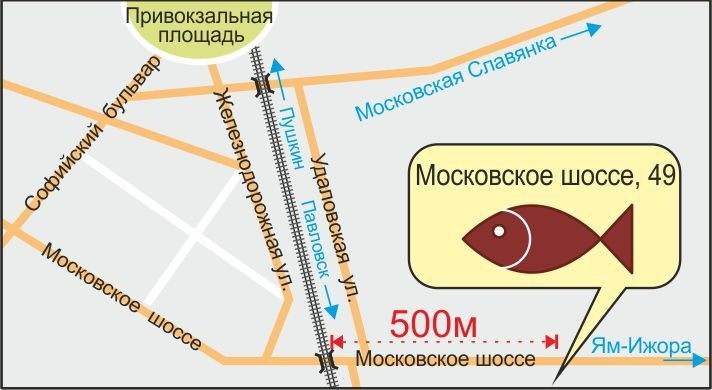

| Терпуг | 375 |
| Окунь Моской | 490 |
| Скумбрия | 325 |
| Дори (Палтусовая) | 390 |
| Сиг | 540 |
| Камбала | 345 |
| Судак | 395 |
| Лещ | 260 |
| Сом | 290 |
| Форель | 570 |
| Дорадо | 700 |
| Семга | 800 |
| Сиг | 590 |
| Лещ | 500 |
| Горбуша | 240 |
| Лещ | 300 |
| Платва | 500 |
| Судак | 600 |
| Чехонь | 600 |
| Корюшка | 700 |
| Корюшка-Зубатка (Дальневосточная) | 1350 |
| Щука | 500 |
| Камбала Ёрж | 450 |
| Семга слабой соли | 800 |
| Стейк семги горячего копчения с сыром Дорблю | 860 |
Мы рады предложить Вам рыбу горячего копчения, приготовленную по домашним рецептам. В нашей лавке мы используем только качественную рыбу, сортов лучше всего подходящих для горячего копчения.
При копчении рыбы используется экологически чистая ольховая щепа. Никаких химических добавок и усилителей вкуса. Только лучшие специи из Финляндии.
Также в нашей лавке вы найдете рыбу холодного копчения, вяленую рыбу и рыбу слабой соли.
Наша лавка работает для Вас уже больше двух лет и заслуженно пользуется доверием у своих покупателей.
Мы любим рыбу и умеем ее готовить!
В летний период будет работает бесплатная доставка при заказе стоимостью от 500 руб. в пределах г. Пушкина и г. Павловска
Оформить заказ, а также узнать о возможности доставки в другие районы Санкт-Петербурга можно по тел. 9-222-130.
Наш магазин находится в непосредственной близости от г. Пушкина, г. Павловска и пос. Тярлево по адресу ул. Московское шоссе д.49.

Наш телефон 9-222-130
Мы вконтакте vk.com/pushfish